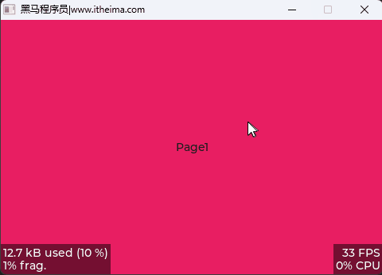

<!DOCTYPE lake>
<p data-lake-id="u8216eed0" id="u8216eed0" style="text-align: center"></p><p data-lake-id="u515bedee" id="u515bedee"><br/></p><h2 data-lake-id="coryv" id="coryv"><span data-lake-id="ubd9b9d06" id="ubd9b9d06">创建page</span></h2><p data-lake-id="u363c56a2" id="u363c56a2"><span data-lake-id="uf845617d" id="uf845617d">编写一个函数，接收页面名称信息和背景颜色</span></p><span class="yuque-card-unsupported">[codeblock]</span><h2 data-lake-id="G7VyV" id="G7VyV"><span data-lake-id="uc2883867" id="uc2883867">删除页面函数</span></h2><span class="yuque-card-unsupported">[codeblock]</span><h3 data-lake-id="21a1e643" id="21a1e643"><span data-lake-id="u309fe71f" id="u309fe71f" style="color: rgb(15, 17, 21)">​</span><span data-lake-id="u5476ee57" id="u5476ee57" style="color: rgb(15, 17, 21)">三个关键指针的角色</span></h3><ol list="u1596979a"><li data-lake-id="ude19804a" fid="ue27e99f0" id="ude19804a"><code data-lake-id="uf9e86f05" id="uf9e86f05"><strong><span class="lake-fontsize-12" data-lake-id="ua12ab2ab" id="ua12ab2ab" style="color: rgb(15, 17, 21); background-color: rgb(235, 238, 242)">act_scr</span></strong></code><strong><span class="lake-fontsize-12" data-lake-id="uc37df4ec" id="uc37df4ec" style="color: rgb(15, 17, 21)"> </span></strong><strong><span class="lake-fontsize-12" data-lake-id="u3a8c0dcb" id="u3a8c0dcb" style="color: rgb(15, 17, 21)">(Active Screen)</span></strong><span class="lake-fontsize-12" data-lake-id="u5944d09e" id="u5944d09e" style="color: rgb(15, 17, 21)">: 指向</span><strong><span class="lake-fontsize-12" data-lake-id="ue1c1e42c" id="ue1c1e42c" style="color: rgb(15, 17, 21)">当前正在显示</span></strong><span class="lake-fontsize-12" data-lake-id="u3a143c8e" id="u3a143c8e" style="color: rgb(15, 17, 21)">的屏幕对象。</span></li><li data-lake-id="u489c32cf" fid="ue27e99f0" id="u489c32cf"><code data-lake-id="u7eb692ab" id="u7eb692ab"><strong><span class="lake-fontsize-12" data-lake-id="uafbbd706" id="uafbbd706" style="color: rgb(15, 17, 21); background-color: rgb(235, 238, 242)">prev_scr</span></strong></code><strong><span class="lake-fontsize-12" data-lake-id="u5767c581" id="u5767c581" style="color: rgb(15, 17, 21)"> </span></strong><strong><span class="lake-fontsize-12" data-lake-id="u4ca1da4e" id="u4ca1da4e" style="color: rgb(15, 17, 21)">(Previous Screen)</span></strong><span class="lake-fontsize-12" data-lake-id="uaf83441f" id="uaf83441f" style="color: rgb(15, 17, 21)">: 指向</span><strong><span class="lake-fontsize-12" data-lake-id="ud3fc7597" id="ud3fc7597" style="color: rgb(15, 17, 21)">上一个</span></strong><span class="lake-fontsize-12" data-lake-id="u147230ce" id="u147230ce" style="color: rgb(15, 17, 21)">屏幕对象。这个指针</span><strong><span class="lake-fontsize-12" data-lake-id="u21f2872e" id="u21f2872e" style="color: rgb(15, 17, 21)">仅在屏幕切换动画播放期间</span></strong><span class="lake-fontsize-12" data-lake-id="ucf29102d" id="ucf29102d" style="color: rgb(15, 17, 21)">有效，用于在动画过程中保留旧屏幕的画面</span><span class="lake-fontsize-12" data-lake-id="u5b6dcb12" id="u5b6dcb12" style="color: rgb(15, 17, 21)">。</span></li><li data-lake-id="ua215f12b" fid="ue27e99f0" id="ua215f12b"><code data-lake-id="u3b59619b" id="u3b59619b"><strong><span class="lake-fontsize-12" data-lake-id="u6f788234" id="u6f788234" style="color: rgb(15, 17, 21); background-color: rgb(235, 238, 242)">scr_to_load</span></strong></code><strong><span class="lake-fontsize-12" data-lake-id="ue3a28c8b" id="ue3a28c8b" style="color: rgb(15, 17, 21)"> (Screen to Load)</span></strong><span class="lake-fontsize-12" data-lake-id="ufe5435da" id="ufe5435da" style="color: rgb(15, 17, 21)">: 指向</span><strong><span class="lake-fontsize-12" data-lake-id="ud642fa44" id="ud642fa44" style="color: rgb(15, 17, 21)">下一个准备加载</span></strong><span class="lake-fontsize-12" data-lake-id="u7246448c" id="u7246448c" style="color: rgb(15, 17, 21)">的屏幕对象。它标记了一个“正在排队”但尚未完全生效的目标屏幕</span></li></ol><h3 data-lake-id="a4e0c2f7" id="a4e0c2f7"><span data-lake-id="u9917a73d" id="u9917a73d" style="color: rgb(15, 17, 21)">各判断条件的作用</span></h3><p data-lake-id="u3963e38c" id="u3963e38c"><span class="lake-fontsize-12" data-lake-id="uf18f49d8" id="uf18f49d8" style="color: rgb(15, 17, 21)">通过检查这些指针的状态，来确保删除操作的安全性：</span></p><ul list="u5ffc7499"><li data-lake-id="ubf1b6f4e" fid="u2c8ed3f5" id="ubf1b6f4e"><code data-lake-id="u62c61aa4" id="u62c61aa4"><strong><span class="lake-fontsize-12" data-lake-id="u0dc5f81d" id="u0dc5f81d" style="color: rgb(15, 17, 21); background-color: rgb(235, 238, 242)">d-&gt;prev_scr == NULL</span></strong></code><strong><span class="lake-fontsize-12" data-lake-id="u957a78c0" id="u957a78c0" style="color: rgb(15, 17, 21)"> </span></strong><strong><span class="lake-fontsize-12" data-lake-id="ud49b3367" id="ud49b3367" style="color: rgb(15, 17, 21)">(没有动画正在播放)</span></strong><span class="lake-fontsize-12" data-lake-id="u7d482f79" id="u7d482f79" style="color: rgb(15, 17, 21)"><br/></span><span class="lake-fontsize-12" data-lake-id="uc1e89738" id="uc1e89738" style="color: rgb(15, 17, 21)">这是最核心的安全检查。当</span><span class="lake-fontsize-12" data-lake-id="uf78805a4" id="uf78805a4" style="color: rgb(15, 17, 21)"> </span><code data-lake-id="uc8fec3dd" id="uc8fec3dd"><span class="lake-fontsize-12" data-lake-id="u1eda62d1" id="u1eda62d1" style="color: rgb(15, 17, 21); background-color: rgb(235, 238, 242)">prev_scr</span></code><span class="lake-fontsize-12" data-lake-id="u35c2ab1b" id="u35c2ab1b" style="color: rgb(15, 17, 21)"> </span><span class="lake-fontsize-12" data-lake-id="u158e719c" id="u158e719c" style="color: rgb(15, 17, 21)">不为</span><span class="lake-fontsize-12" data-lake-id="u7ef7c3b6" id="u7ef7c3b6" style="color: rgb(15, 17, 21)"> </span><code data-lake-id="u249d277b" id="u249d277b"><span class="lake-fontsize-12" data-lake-id="u448436df" id="u448436df" style="color: rgb(15, 17, 21); background-color: rgb(235, 238, 242)">NULL</span></code><span class="lake-fontsize-12" data-lake-id="u6d63771c" id="u6d63771c" style="color: rgb(15, 17, 21)"> </span><span class="lake-fontsize-12" data-lake-id="u22bf0905" id="u22bf0905" style="color: rgb(15, 17, 21)">时，意味着系统正在播放一个屏幕切换动画</span><span class="lake-fontsize-12" data-lake-id="u5feac84b" id="u5feac84b" style="color: rgb(15, 17, 21)">。此时，</span><code data-lake-id="ua8f73fd0" id="ua8f73fd0"><span class="lake-fontsize-12" data-lake-id="uf93fbac7" id="uf93fbac7" style="color: rgb(15, 17, 21); background-color: rgb(235, 238, 242)">act_scr</span></code><span class="lake-fontsize-12" data-lake-id="ue78b3c2b" id="ue78b3c2b" style="color: rgb(15, 17, 21)">（当前屏幕）和</span><code data-lake-id="u9f13b3f7" id="u9f13b3f7"><span class="lake-fontsize-12" data-lake-id="u516949ca" id="u516949ca" style="color: rgb(15, 17, 21); background-color: rgb(235, 238, 242)">prev_scr</span></code><span class="lake-fontsize-12" data-lake-id="uef914c6e" id="uef914c6e" style="color: rgb(15, 17, 21)">（上一个屏幕）都处于被使用的状态。如果在这个节骨眼上清空</span><span class="lake-fontsize-12" data-lake-id="u69f0edc7" id="u69f0edc7" style="color: rgb(15, 17, 21)"> </span><code data-lake-id="u7c2ffc01" id="u7c2ffc01"><span class="lake-fontsize-12" data-lake-id="u896778d4" id="u896778d4" style="color: rgb(15, 17, 21); background-color: rgb(235, 238, 242)">act_scr</span></code><span class="lake-fontsize-12" data-lake-id="u328e30ae" id="u328e30ae" style="color: rgb(15, 17, 21)">，正在进行的动画很可能会因为引用了被破坏的内存而导致程序崩溃</span><span class="lake-fontsize-12" data-lake-id="u850a0442" id="u850a0442" style="color: rgb(15, 17, 21)">。所以，只有当</span><span class="lake-fontsize-12" data-lake-id="u442d6ced" id="u442d6ced" style="color: rgb(15, 17, 21)"> </span><code data-lake-id="u4b21f7d1" id="u4b21f7d1"><span class="lake-fontsize-12" data-lake-id="ufcd74ad8" id="ufcd74ad8" style="color: rgb(15, 17, 21); background-color: rgb(235, 238, 242)">prev_scr</span></code><span class="lake-fontsize-12" data-lake-id="ub452ff0d" id="ub452ff0d" style="color: rgb(15, 17, 21)"> </span><span class="lake-fontsize-12" data-lake-id="u659f6fcb" id="u659f6fcb" style="color: rgb(15, 17, 21)">为</span><span class="lake-fontsize-12" data-lake-id="u2034a3c9" id="u2034a3c9" style="color: rgb(15, 17, 21)"> </span><code data-lake-id="u7a18a499" id="u7a18a499"><span class="lake-fontsize-12" data-lake-id="u7380110e" id="u7380110e" style="color: rgb(15, 17, 21); background-color: rgb(235, 238, 242)">NULL</span></code><span class="lake-fontsize-12" data-lake-id="u0200a8ab" id="u0200a8ab" style="color: rgb(15, 17, 21)">，即</span><strong><span class="lake-fontsize-12" data-lake-id="u406e7711" id="u406e7711" style="color: rgb(15, 17, 21)">没有动画在进行时</span></strong><span class="lake-fontsize-12" data-lake-id="u59546683" id="u59546683" style="color: rgb(15, 17, 21)">，才允许执行清空操作</span><span class="lake-fontsize-12" data-lake-id="u2959fd11" id="u2959fd11" style="color: rgb(15, 17, 21)">。</span></li><li data-lake-id="u0f25ecc8" fid="u2c8ed3f5" id="u0f25ecc8"><code data-lake-id="u38e0f909" id="u38e0f909"><strong><span class="lake-fontsize-12" data-lake-id="u3d5a8b36" id="u3d5a8b36" style="color: rgb(15, 17, 21); background-color: rgb(235, 238, 242)">d-&gt;scr_to_load == NULL</span></strong></code><strong><span class="lake-fontsize-12" data-lake-id="u759345c3" id="u759345c3" style="color: rgb(15, 17, 21)"> </span></strong><strong><span class="lake-fontsize-12" data-lake-id="ub897540c" id="ub897540c" style="color: rgb(15, 17, 21)">(没有待加载的屏幕)</span></strong><span class="lake-fontsize-12" data-lake-id="ue6c2d422" id="ue6c2d422" style="color: rgb(15, 17, 21)"><br/></span><span class="lake-fontsize-12" data-lake-id="u0b105834" id="u0b105834" style="color: rgb(15, 17, 21)">这个条件用来判断系统是否正处于一个</span><strong><span class="lake-fontsize-12" data-lake-id="u3fb3c311" id="u3fb3c311" style="color: rgb(15, 17, 21)">正常的、稳定的状态</span></strong><span class="lake-fontsize-12" data-lake-id="u779e6523" id="u779e6523" style="color: rgb(15, 17, 21)">。如果</span><span class="lake-fontsize-12" data-lake-id="u54300478" id="u54300478" style="color: rgb(15, 17, 21)"> </span><code data-lake-id="u0342e194" id="u0342e194"><span class="lake-fontsize-12" data-lake-id="ufbbb1fe1" id="ufbbb1fe1" style="color: rgb(15, 17, 21); background-color: rgb(235, 238, 242)">scr_to_load</span></code><span class="lake-fontsize-12" data-lake-id="u43e5abb3" id="u43e5abb3" style="color: rgb(15, 17, 21)"> </span><span class="lake-fontsize-12" data-lake-id="uaae31d76" id="uaae31d76" style="color: rgb(15, 17, 21)">不为</span><span class="lake-fontsize-12" data-lake-id="ube02cbea" id="ube02cbea" style="color: rgb(15, 17, 21)"> </span><code data-lake-id="uf3e719dc" id="uf3e719dc"><span class="lake-fontsize-12" data-lake-id="u7b25afc2" id="u7b25afc2" style="color: rgb(15, 17, 21); background-color: rgb(235, 238, 242)">NULL</span></code><span class="lake-fontsize-12" data-lake-id="u1c41296e" id="u1c41296e" style="color: rgb(15, 17, 21)">，说明</span><span class="lake-fontsize-12" data-lake-id="u03a69205" id="u03a69205" style="color: rgb(15, 17, 21)"> </span><code data-lake-id="ufc853cde" id="ufc853cde"><span class="lake-fontsize-12" data-lake-id="u2ca32095" id="u2ca32095" style="color: rgb(15, 17, 21); background-color: rgb(235, 238, 242)">lv_scr_load()</span></code><span class="lake-fontsize-12" data-lake-id="u136fe2bb" id="u136fe2bb" style="color: rgb(15, 17, 21)"> </span><span class="lake-fontsize-12" data-lake-id="u1a3513e8" id="u1a3513e8" style="color: rgb(15, 17, 21)">或</span><span class="lake-fontsize-12" data-lake-id="ue3e1353a" id="ue3e1353a" style="color: rgb(15, 17, 21)"> </span><code data-lake-id="ua810cf88" id="ua810cf88"><span class="lake-fontsize-12" data-lake-id="uc1a89f86" id="uc1a89f86" style="color: rgb(15, 17, 21); background-color: rgb(235, 238, 242)">lv_scr_load_anim()</span></code><span class="lake-fontsize-12" data-lake-id="uf6d4e091" id="uf6d4e091" style="color: rgb(15, 17, 21)"> </span><span class="lake-fontsize-12" data-lake-id="uc042a083" id="uc042a083" style="color: rgb(15, 17, 21)">已经被调用，系统正准备切换到另一个屏幕</span><span class="lake-fontsize-12" data-lake-id="u70927392" id="u70927392" style="color: rgb(15, 17, 21)">。在这个过渡的“间隙”清空当前屏幕，可能会与新屏幕的加载过程产生冲突。因此，此条件确保在</span><strong><span class="lake-fontsize-12" data-lake-id="ucbbd2eee" id="ucbbd2eee" style="color: rgb(15, 17, 21)">没有新的屏幕加载任务</span></strong><span class="lake-fontsize-12" data-lake-id="ub4f9a312" id="ub4f9a312" style="color: rgb(15, 17, 21)">时，才执行清空。</span></li><li data-lake-id="u43992d8f" fid="u2c8ed3f5" id="u43992d8f"><code data-lake-id="ud2c72160" id="ud2c72160"><strong><span class="lake-fontsize-12" data-lake-id="u8f50a84f" id="u8f50a84f" style="color: rgb(15, 17, 21); background-color: rgb(235, 238, 242)">d-&gt;scr_to_load == act_scr</span></strong></code><strong><span class="lake-fontsize-12" data-lake-id="ue867a87d" id="ue867a87d" style="color: rgb(15, 17, 21)"> (待加载的屏幕就是当前屏幕)</span></strong><span class="lake-fontsize-12" data-lake-id="u38bbf8bd" id="u38bbf8bd" style="color: rgb(15, 17, 21)"><br/></span><span class="lake-fontsize-12" data-lake-id="u27fbff4f" id="u27fbff4f" style="color: rgb(15, 17, 21)">这是一个</span><strong><span class="lake-fontsize-12" data-lake-id="ube3a2a18" id="ube3a2a18" style="color: rgb(15, 17, 21)">保护性</span></strong><span class="lake-fontsize-12" data-lake-id="u15844d12" id="u15844d12" style="color: rgb(15, 17, 21)">的判断，针对一种特殊且危险的场景：</span><strong><span class="lake-fontsize-12" data-lake-id="u5d9bbcc5" id="u5d9bbcc5" style="color: rgb(15, 17, 21)">重复加载同一个屏幕</span></strong><span class="lake-fontsize-12" data-lake-id="u3f52bf9d" id="u3f52bf9d" style="color: rgb(15, 17, 21)">。<br/></span><span class="lake-fontsize-12" data-lake-id="uad9720fd" id="uad9720fd" style="color: rgb(15, 17, 21)">当用户快速或错误地多次调用 </span><code data-lake-id="u9d8c36c9" id="u9d8c36c9"><span class="lake-fontsize-12" data-lake-id="u4ab7fa00" id="u4ab7fa00" style="color: rgb(15, 17, 21); background-color: rgb(235, 238, 242)">lv_scr_load(act_scr)</span></code><span class="lake-fontsize-12" data-lake-id="ue8e48241" id="ue8e48241" style="color: rgb(15, 17, 21)"> 时，</span><code data-lake-id="u56a84b36" id="u56a84b36"><span class="lake-fontsize-12" data-lake-id="ubf8dd3e0" id="ubf8dd3e0" style="color: rgb(15, 17, 21); background-color: rgb(235, 238, 242)">scr_to_load</span></code><span class="lake-fontsize-12" data-lake-id="u2cf28b82" id="u2cf28b82" style="color: rgb(15, 17, 21)"> 会被设置为 </span><code data-lake-id="ue4015239" id="ue4015239"><span class="lake-fontsize-12" data-lake-id="u64f28ccd" id="u64f28ccd" style="color: rgb(15, 17, 21); background-color: rgb(235, 238, 242)">act_scr</span></code><span class="lake-fontsize-12" data-lake-id="u32a39d39" id="u32a39d39" style="color: rgb(15, 17, 21)"> 本身。如果不加这个条件，</span><code data-lake-id="u5d8c27dd" id="u5d8c27dd"><span class="lake-fontsize-12" data-lake-id="u05d98e27" id="u05d98e27" style="color: rgb(15, 17, 21); background-color: rgb(235, 238, 242)">d-&gt;scr_to_load == NULL</span></code><span class="lake-fontsize-12" data-lake-id="u0a952f8e" id="u0a952f8e" style="color: rgb(15, 17, 21)"> 为假，你的清空操作就不会执行，导致页面无法更新。而加上 </span><code data-lake-id="u059bd886" id="u059bd886"><span class="lake-fontsize-12" data-lake-id="u37d03933" id="u37d03933" style="color: rgb(15, 17, 21); background-color: rgb(235, 238, 242)">|| d-&gt;scr_to_load == act_scr</span></code><span class="lake-fontsize-12" data-lake-id="u1f740822" id="u1f740822" style="color: rgb(15, 17, 21)"> 后，条件变为 </span><code data-lake-id="u4d229bd7" id="u4d229bd7"><span class="lake-fontsize-12" data-lake-id="u46f271ac" id="u46f271ac" style="color: rgb(15, 17, 21); background-color: rgb(235, 238, 242)">(d-&gt;prev_scr == NULL &amp;&amp; (d-&gt;scr_to_load == NULL || d-&gt;scr_to_load == act_scr))</span></code><span class="lake-fontsize-12" data-lake-id="u22ae704b" id="u22ae704b" style="color: rgb(15, 17, 21)">，就能识别出这种“加载自己”的请求，允许清空并刷新当前屏幕。</span></li></ul><h3 data-lake-id="25f9c7fa" id="25f9c7fa"><span data-lake-id="ue7789bfa" id="ue7789bfa" style="color: rgb(15, 17, 21)">​</span><span data-lake-id="u19b410a2" id="u19b410a2" style="color: rgb(15, 17, 21)">总结</span></h3><p data-lake-id="u6d7f6394" id="u6d7f6394"><span class="lake-fontsize-12" data-lake-id="u9ac7a234" id="u9ac7a234" style="color: rgb(15, 17, 21)">简单来说，这个判断逻辑确保了</span><span class="lake-fontsize-12" data-lake-id="ubd1b45eb" id="ubd1b45eb" style="color: rgb(15, 17, 21)"> </span><code data-lake-id="u62ff9ca0" id="u62ff9ca0"><span class="lake-fontsize-12" data-lake-id="u53cb07ec" id="u53cb07ec" style="color: rgb(15, 17, 21); background-color: rgb(235, 238, 242)">lv_obj_clean(act_scr)</span></code><span class="lake-fontsize-12" data-lake-id="u393beb5c" id="u393beb5c" style="color: rgb(15, 17, 21)"> </span><span class="lake-fontsize-12" data-lake-id="ub80e5f84" id="ub80e5f84" style="color: rgb(15, 17, 21)">只有在</span><span class="lake-fontsize-12" data-lake-id="ua382c6cb" id="ua382c6cb" style="color: rgb(15, 17, 21)"> </span><strong><span class="lake-fontsize-12" data-lake-id="uc7bca5e6" id="uc7bca5e6" style="color: rgb(15, 17, 21)">“安全”</span></strong><span class="lake-fontsize-12" data-lake-id="u97a5c492" id="u97a5c492" style="color: rgb(15, 17, 21)"> </span><span class="lake-fontsize-12" data-lake-id="u699d2851" id="u699d2851" style="color: rgb(15, 17, 21)">的时刻才会被执行：</span></p><ul list="u6074afa9"><li data-lake-id="u92582e38" fid="u3cc8b444" id="u92582e38"><strong><span class="lake-fontsize-12" data-lake-id="u6b6b2dab" id="u6b6b2dab" style="color: rgb(15, 17, 21)">没有动画正在播放</span></strong><span class="lake-fontsize-12" data-lake-id="u54f28535" id="u54f28535" style="color: rgb(15, 17, 21)"> </span><span class="lake-fontsize-12" data-lake-id="u4f885a42" id="u4f885a42" style="color: rgb(15, 17, 21)">(</span><code data-lake-id="ubc211ea7" id="ubc211ea7"><span class="lake-fontsize-12" data-lake-id="u84fb92dc" id="u84fb92dc" style="color: rgb(15, 17, 21); background-color: rgb(235, 238, 242)">prev_scr == NULL</span></code><span class="lake-fontsize-12" data-lake-id="uc7a625ca" id="uc7a625ca" style="color: rgb(15, 17, 21)">)</span></li><li data-lake-id="u106832fd" fid="u3cc8b444" id="u106832fd"><strong><span class="lake-fontsize-12" data-lake-id="ue48801bd" id="ue48801bd" style="color: rgb(15, 17, 21)">系统处于空闲或明确要刷新当前屏幕的状态</span></strong><span class="lake-fontsize-12" data-lake-id="ucf5ad2ee" id="ucf5ad2ee" style="color: rgb(15, 17, 21)"> (</span><code data-lake-id="u4ca99ee3" id="u4ca99ee3"><span class="lake-fontsize-12" data-lake-id="u216c5ad0" id="u216c5ad0" style="color: rgb(15, 17, 21); background-color: rgb(235, 238, 242)">scr_to_load == NULL</span></code><span class="lake-fontsize-12" data-lake-id="u03c689f4" id="u03c689f4" style="color: rgb(15, 17, 21)"> 或 </span><code data-lake-id="u615a50e5" id="u615a50e5"><span class="lake-fontsize-12" data-lake-id="ua9ccd732" id="ua9ccd732" style="color: rgb(15, 17, 21); background-color: rgb(235, 238, 242)">scr_to_load == act_scr</span></code><span class="lake-fontsize-12" data-lake-id="ub05de7bc" id="ub05de7bc" style="color: rgb(15, 17, 21)">)</span></li></ul><h2 data-lake-id="B2DAX" id="B2DAX"><span data-lake-id="u38b9d719" id="u38b9d719">页面单击回调</span></h2><span class="yuque-card-unsupported">[codeblock]</span><h2 data-lake-id="k3GZx" id="k3GZx"><span data-lake-id="u721b3014" id="u721b3014">main函数调用</span></h2><p data-lake-id="u724e623d" id="u724e623d"><span data-lake-id="udb70bd55" id="udb70bd55">在main.c中，先把第一个页面显示出来</span></p><span class="yuque-card-unsupported">[codeblock]</span>